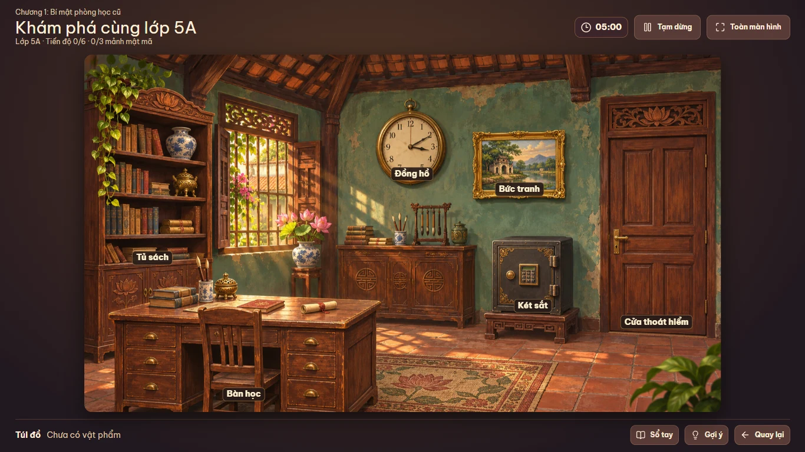

Chương 1 · Bí mật phòng học cũ
Căn phòng bí ẩn
Cả lớp cùng khám phá căn phòng học cũ. Trả lời câu hỏi để thu thập manh mối, ghép mật mã mở két và tìm chìa khóa thoát hiểm.
- Dùng câu hỏi mẫu hoặc chọn từ ngân hàng của lớp
- Đặt thời lượng và bật gợi ý theo nhịp của lớp
- Tạm dừng, mở lại và tiếp tục từ tiến độ đã lưu
